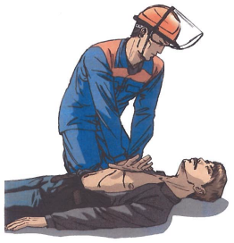

Билет №8
Вопрос 1. Газоопасные работы, проводимые без оформления наряда-допуска. (ПИ-234-14, п.2.2-2.4., 2.12)
Ответ:
2.2. В Управлении по каждому цеху (участку) должен быть разработан перечень газоопасных работ.
В перечне должны быть раздельно указаны газоопасные работы:
I - проводимые с оформлением наряда-допуска;
II - проводимые без оформления наряда-допуска, но с обязательной регистрацией таких работ перед их началом в журнале.
2.3. Перечень газоопасных работ разрабатывается начальниками цехов (участков), согласовывается с отделом охраны труда и промышленной безопасности и утверждается главным инженером. Перечень газоопасных работ должен периодически не реже 1 раза в год пересматриваться и переутверждаться.
2.4. В перечне должны быть указаны: цех (участок), место и характер работы, возможные вредные и опасные производственные факторы при ее проведении, категория исполнителей (производственный персонал), основные мероприятия, обеспечивающие безопасность выполняемых работ.
2.12. Газоопасные работы, выполняемые без оформления наряда-допуска, проводятся в дневное и ночное время суток. Перед проведением газоопасных работ без оформления наряда-допуска технологическим персоналом в ночное время, регистрируемых в журнале (приложение 1), уведомляется по телефону начальник смены ЦИТС.
Вопрос 2. Загазованность. Защита органов дыхания. (ИОТВ-82-15, п.2.)
Ответ:
2.1. Для индивидуальной защиты органов дыхания человека от вредных веществ, присутствующих в окружающем воздухе в виде пыли, газов, паров или аэрозолей при объемной доле свободного кислорода менее 18% предусмотрены фильтрующие респираторы и противогазы. Респираторы и противогазы обеспечивают очистку вдыхаемого воздуха от вредных веществ до содержания, не превышающего предельно допустимой концентрации. Надежная защита может быть достигнута лишь при условии рационального выбора и правильного применения в конкретной производственной обстановке соответствующих конструкций и марок средств индивидуальной защиты органов дыхания.
2.2. Промышленность выпускает респираторы: газопылезащитный, противопылевой. Запрещается использовать противопылевые респираторы для защиты от вредных паров и газов. В зависимости от срока службы различают респираторы одноразового применения («Лепесток», У-2К, «Кама»), которые после отработки больше не пригодны для эксплуатации, и респираторы многоразового использования, в которых предусмотрена замена фильтров.
Вопрос 3. Требования к инструменту при работе в цепях электроизмерительных приборов, релейной защиты и телемеханики. (ИОТВ-105-14, п.3.2)
Ответ:
Работу в цепях электроизмерительных приборов, релейной защиты и телемеханики необходимо производить только исправным инструментом. Инструмент должен быть с изолированными рукоятками. Рабочая часть отверток должна быть хорошо заточена. Рукоятки плоскогубцев, острогубцев и кусачек должны иметь защитную изоляцию; гаечные ключи должны иметь параллельные губки, их рабочие поверхности не должны иметь сбитых скосов, а рукоятки заусенцев. Изолированный инструмент должен быть пронумерован и испытан в установленном порядке (периодичность испытания - ежегодно).
Вопрос 4. Назовите порядок оказания первой помощи при химических ожогах и отравлении химическими веществами. (Инструкция для проведения обучения оказания первой помощи пострадавшим на производстве, п. 12.5.-12.6.)
Ответ:
Правила оказания первой помощи в случаях попадания в глаза едких химических веществ:
Правило первое.
Уложить пострадавшего и повернуть его голову в сторону пораженного глаза.
Правило второе.
Промыть глаз струей холодной воды так, чтобы она стекала от носа кнаружи.
Правило третье.
Нельзя применять нейтрализующие жидкости при попадании в глаза едких химических веществ.
Правило четвертое.
Нельзя промывать глаза водой в случае попадания в них карбида кальция, перманганата калия. Можно только удалять твердые частички марлевым тампоном или носовым платком.
Если в глаз попал песок или пыль? Промыть глаз обильной струей холодной воды или погрузить лицо в воду и под водой часто поморгать. В случаях ультрафиолетового ожога глаз? Прикрыть глаза темной тканью, промыть крепким холодным чаем и обратиться к врачу.
Действия в случаях поражения кожи агрессивными химическими веществами:
Внимание! Нельзя использовать растворы кислот или щелочей для реакции нейтрализации на коже пострадавшего.
Правило первое.
Немедленно снять одежду, пропитанную химическим веществом.
Правило второе.
Обильно промывать пораженные участки холодной водой до прибытия врача.
Правило третье.
Предложить пострадавшему обильное теплое питье.
Если на кожу попала негашеная известь? Необходимо удалить известь сухой тканью. Ни в коем случае не мочить и не промывать водой. Если на кожу попал фосфор? Немедленно опустить обожженное место в холодную воду на 15-20 минут и палочкой удалить частицы фосфора.
Вопрос 5. Назовите опасные и вредные производственные факторы, которым может быть подвержен работник в процессе передвижения по территории (ИОТВ-146-15, п.1.5.)
Ответ:
В процессе передвижения по территории работник может быть подвержен воздействию различных опасных и вредных производственных факторов:
повышенное скольжение опорной поверхности;
неблагоприятные метеорологические условия (гололед, дождь, низкая температура, высокая влажность);
неправильное применение или применение не в полном объеме спецодежды и специальной обуви, а также средств индивидуальной защиты;
отсутствие ограждений, запрещающих и предупредительных знаков, специальной окраски (маркировки);
движущиеся механизмы, автомобили и строительная техника;
прочие травмирующие факторы.
Вопрос 6. В каких случаях пострадавшему проводятся реанимационные мероприятия и как они выполняются (с отработкой практических навыков на тренажере). (Инструкция для проведения обучения оказания первой помощи пострадавшим на производстве, п. 4.2.-5.9.)
Ответ:
4.2 Последовательность действий при оказании первой медицинской помощи:
Такая очередность действий позволит сохранить жизнь пострадавшего до прибытия медицинских работников |
1. |
Нет сознания и нет пульса на сонной артерии (клиническая смерть) |
 |
Приступить к реанимации (см. п.5) |
2. |
Нет сознания, но есть пульс на сонной артерии (обморок или начало развития комы) |
 |
Попытаться привести пострадавшего в сознание (см. п.6)
Если в течени 3-4 минут это не удалось, обязательно повернуть его на живот (см. п.7) |
3. |
Обильное кровотечение |

|
Быстро пережать конечность выше раны и наложить жгут (см. п.9) |
4. |
Наличие раны |

|
Наложить стерильные повязки (см. п.10.3) |
5. |
Признаки перелома конечностей |

|
Наложить транспортную шину (см. п.11) |
5. Правила определения признаков клинической смерти:
Правило первое.
Чтобы сделать вывод о наступлении клинической смерти у неподвижно лежащего пострадавшего, достаточно убедиться в отсутствии сознания и пульса на сонной артерии.
Правило второе.
Не следует терять время на определение сознания путем ожидания ответов на вопросы: «Все ли у тебя в порядке? Можно ли приступить к оказанию помощи?». Надавливание на шею в области сонной артерии является сильным болевым раздражителем.
Правило третье.
Не следует терять время на определение признаков дыхания. Они трудноуловимы, и на их определение с помощью ворсинок ватки, зеркальца или наблюдения за движением грудной клетки можно потерять неоправданно много времени. Самостоятельное дыхание без пульса на сонной артерии продолжается не более минуты, а вдох искусственного дыхания взрослому человеку ни при каких обстоятельствах не может причинить вреда.
Если подтвердились признаки клинической смерти? Быстро освободить грудную клетку от одежды приступить к сердечно-легочной реанимации см. пп.5.5; 5.6.

5.1. Правила определения пульса на сонной артерии:
Правило первое.
Расположить четыре пальца на шее пострадавшего (см. п.5.4) и убедиться в отсутствии пульса на сонной артерии.
Правило второе.
Определять пульс следует не менее 10 секунд.
5.2. Правила освобождения грудной клетки от одежды для проведения реанимации:
Правило первое.
Расстегнуть пуговицы рубашки и освободить грудную клетку.
Правило второе.
Джемпер, свитер или водолазку приподнять и сдвинуть к шее.
Правило третье.
Майку, футболку или любое нательное белье из тонкой ткани можно не снимать. Но прежде чем наносить удар по грудине или приступать к непрямому массажу сердца, следует убедиться, что под тканью нет нательного крестика или кулона.
Правило четвертое.
Поясной ремень обязательно расстегнуть или ослабить. Известны случаи, когда во время проведения непрямого массажа сердца печень повреждалась о край жесткого ремня.

Внимание! Перед тем как приступить к реанимации, необходимо уложить пострадавшего на жесткую и ровную поверхность, освободить грудную клетку от одежды и определить анатомические ориентиры (см. п. 5.4).
5.3. Правила освобождения грудной клетки от одежды для проведения реанимации, в случаях, когда на женщине надет бюстгальтер - его надо сдвинуть ближе к шее.
5.4. Анатомические ориентиры, необходимые для проведения сердечно-легочной реанимации:

5.5. Правила проведения непрямого массажа сердца и безвентиляционной реанимации:
Правило первое.
Расположить основание правой ладони выше мечевидного отростка так, чтобы большой палец был направлен на подбородок или живот пострадавшего. Левую ладонь расположить на ладони правой руки.
Правило второе.
Переместить центр тяжести на грудину пострадавшего и проводить непрямой массаж сердца прямыми руками.
Правило третье.
Продавливать грудную клетку не менее чем на 3-5 см с частотой не реже 60 раз в минуту.
Правило четвертое.
Каждое следующее надавливание начинать только после того, как грудная клетка вернется в исходное положение.
Правило пятое.
Оптимальное соотношение надавливаний на грудную клетку и вдохов искусственной вентиляции легких - 30:2, независимо от количества участников реанимации.
Правило шестое.
По возможности приложить холод к голове.
Внимание! При каждом надавливании на грудную клетку происходит активный выдох, а при ее возвращении в исходное положение — пассивный вдох. Когда выделения
изо рта пострадавшего представляют угрозу для здоровья спасающего, можно ограничиться проведением непрямого массажа сердца, т.е. безвентиляционным вариантом реанимации.
Внимание! Чтобы непрямой массаж сердца был эффективным, его необходимо проводить на ровной жесткой поверхности.
Если под ладонью появился неприятный хруст (признак перелома ребер)? Уменьшить не глубину и силу, а ритм надавливаний и ни в коем случае не прекращать непрямой массаж сердца.
5.6. Правила проведения вдоха искусственной вентиляции легких (далее - ИВЛ) способом «изо рта в рот»:
Правило первое.
Правой рукой обхватить подбородок так, чтобы пальцы, расположенные на нижней челюсти и щеках пострадавшего, смогли разжать и раздвинуть его губы.
Правило второе.
Левой рукой зажать нос.
Правило третье.
Запрокинуть голову пострадавшего и удерживать ее в таком положении до окончания проведения вдоха.
Правило четвертое.
Плотно прижаться губами к губам пострадавшего и сделать в него максимальный выдох. Если во время проведения вдоха ИВЛ пальцы правой руки почувствуют раздувание щек, можно сделать безошибочный вывод о неэффективности попытки вдоха.
Правило пятое.
Если первая попытка вдоха ИВЛ оказалась неудачной, следует увеличить угол запрокидывания головы и сделать повторную попытку.
Правило шестое.
Если вторая попытка вдоха ИВЛ оказалась неудачной, то необходимо сделать 30 надавливаний на грудину, повернуть пострадавшего на живот, очистить пальцами ротовую полость и только затем сделать вдох ИВЛ.

Внимание! Нет необходимости разжимать челюсти пострадавшего, так как зубы не препятствуют прохождению воздуха. Достаточно разжать только губы.
Если невозможно преодолеть чувство брезгливости или выделения изо рта пострадавшего представляют угрозу для здоровья спасателя? Следует использовать специальную пластиковую маску для проведения ИВЛ способом «изо рта в рот».
5.6.1. Правила использования защитной маски для безопасного проведения ИВЛ:
Внимание! Когда контакт с выделениями из ротовой полости пострадавшего представляет угрозу инфицирования, отравления ядовитыми газами, искусственное дыхание можно проводить только через специальную защитную маску.
Правило первое.
Правильно взять маску в правую руку. Захватить ее пальцами правой руки так, чтобы большая часть ладони осталась свободной.
Правило второе.
Свободной частью ладони обхватить подбородок. Придерживая пальцами маску на лице, запрокинуть голову пострадавшего.
Правило третье.
Левой рукой прижать маску к лицу.
Правило четвертое.
Прижаться губами к отверстию с защитным клапаном и сделать в него выдох.
 Когда проведение ИВЛ «изо рта в рот» представляет угрозу для здоровья спасателя, а защитной маски нет? Проводить непрямой массаж сердца - безвентиляционную реанимацию (см. п.5.5) - до прибытия медицинского персонала или появления защитной маски.
Когда проведение ИВЛ «изо рта в рот» представляет угрозу для здоровья спасателя, а защитной маски нет? Проводить непрямой массаж сердца - безвентиляционную реанимацию (см. п.5.5) - до прибытия медицинского персонала или появления защитной маски.
5.7. Правила проведения реанимации более 10-15 минут:
Внимание! Мужчина со средними физическими данными может проводить комплекс сердечно-легочной реанимации не более 3-4 минут. Вдвоем с помощником - не более 10 минут. Втроем — с лицами любого пола, возраста и физических данных - более часа.
Правило первое.
Первый участник делает вдох искусственного дыхания. Контролирует реакцию зрачков и пульс на сонной артерии и информирует партнеров о состоянии пострадавшего: «Есть реакция зрачков!» или «Есть пульс!» и т.п.
Правило второе.
Второй участник проводит непрямой массаж сердца и отдает команду: «Вдох!». Контролирует эффективность вдоха искусственного дыхания по подъему грудной клетки и констатирует: «Вдох прошел!» или «Нет вдоха!».
Правило третье.
Третий участник приподнимает ноги пострадавшего для улучшения притока крови к сердцу. Восстанавливает силы и готовится сменить второго участника. Координирует действия.
Правило четвертое.
Через каждые 2-3 минуты реанимации обязательно производится смена участников и проверяется наличие самостоятельного пульса.
Правило пятое.
По возможности приложить холод к голове пострадавшего.
 5.8. Правила расположения участников реанимации:
5.8. Правила расположения участников реанимации:
Внимание! Такое расположение участников позволяет:
избегать столкновений головами;
рационально использовать силы (физически слабого участника следует чаще располагать в ногах пострадавшего, но при этом он должен координировать действия всей команды);
привлечь к реанимации любого необученного человека.

Сначала новичку следует доверить поддерживание ног, а затем задействовать в проведении реанимации.
5.9. Правила проведения реанимации в ограниченном пространстве:
Правило первое.
Комплекс реанимации можно проводить только в положении пострадавшего лежа на спине, на ровной жесткой поверхности.
Правило второе.
Обеспечить возможность запрокидывания головы пострадавшего для проведения ИВЛ.
Вопрос 7. Техническое обслуживание установок пожарной автоматики. Периодичность, типовые операции, регламентирующие документы, оформление документации. (Положение о техническом обслуживании и текущем ремонте средств автоматизации и телемеханизации, контрольно-измерительных приборов, СТО 232-2008,ПИ-74-15, ПИ-75-13, ПИ-156-15,ПИ-238-15, ПИ-503-14, ПИ-504-14).
Ответ:
Вопрос 8. Проверка средств сигнализации, противоаварийных защит и блокировок на узлах водоподготовки с артезианскими скважинами, канализационных очистных станциях. Периодичность, типовые операции, регламентирующие документы, оформление документации. (Положение о техническом обслуживании и текущем ремонте средств автоматизации телемеханизации, контрольно-измерительных приборов, СТО-36-2007, ПИ-99-13).
Ответ:
Предыдущий билет
Вернуться в раздел
Следующий билет